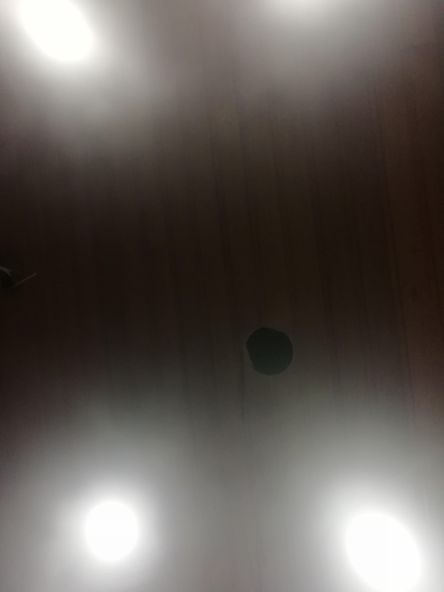

¿Como se hace?
Este tipo de imagenes las podemos crear usando diferentes aplicaiones en mi caso se usa la aplicacion gratuita llamada Glitch Lab.
Allí podemos editar imagenes simples y ponerles los efectos de distorsion que queramos es bastante completa, tambien cuenta con opcion premium que te da la oportunidad
de tener mas formas de editar tus imagenes.
|  |
 |
Volver